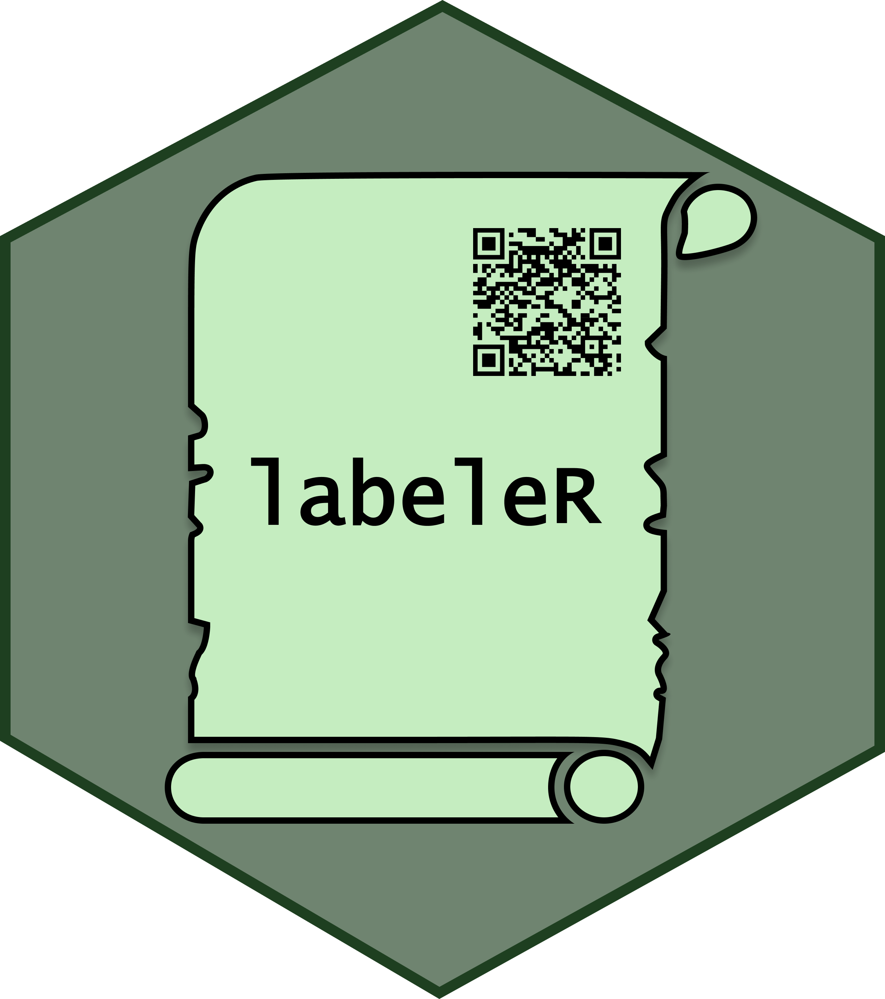
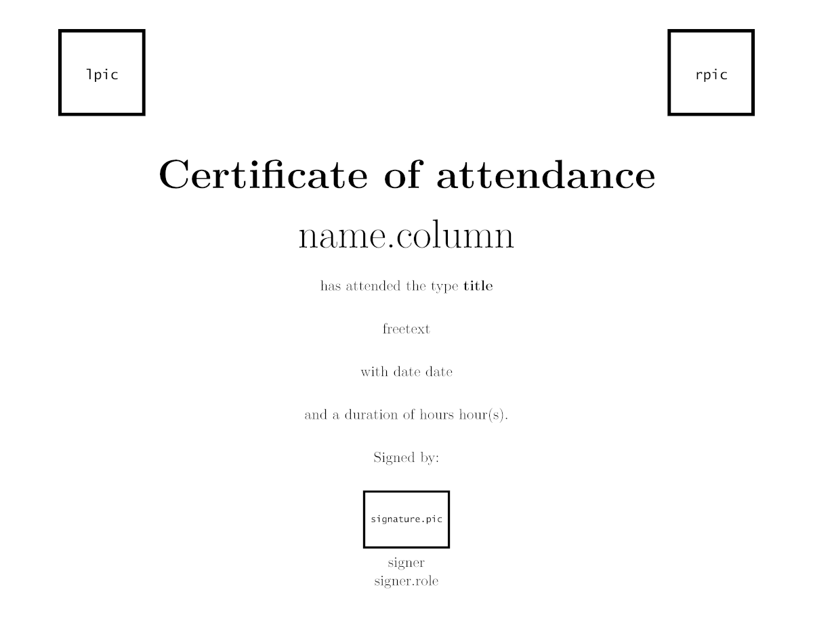
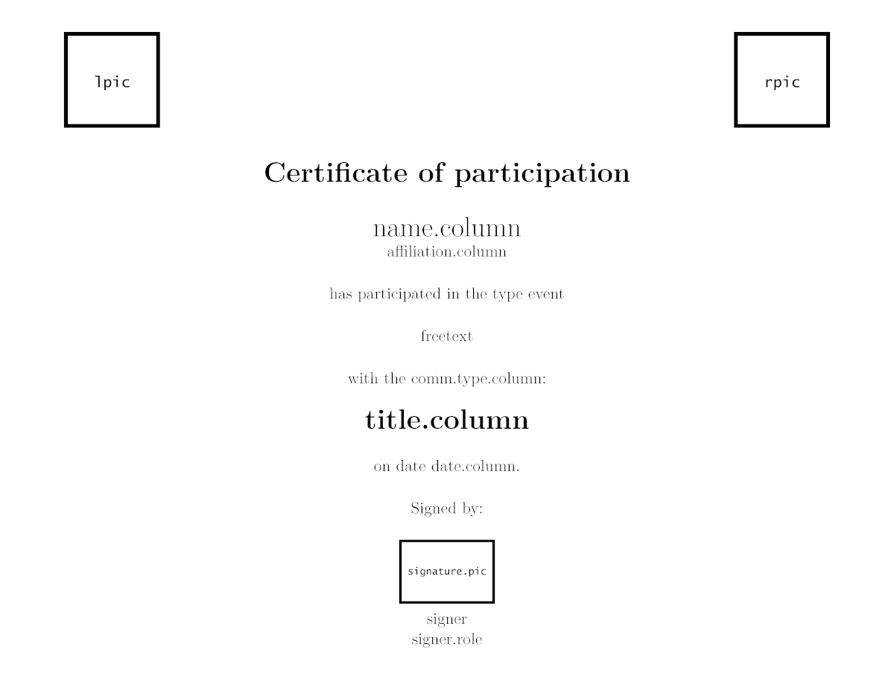
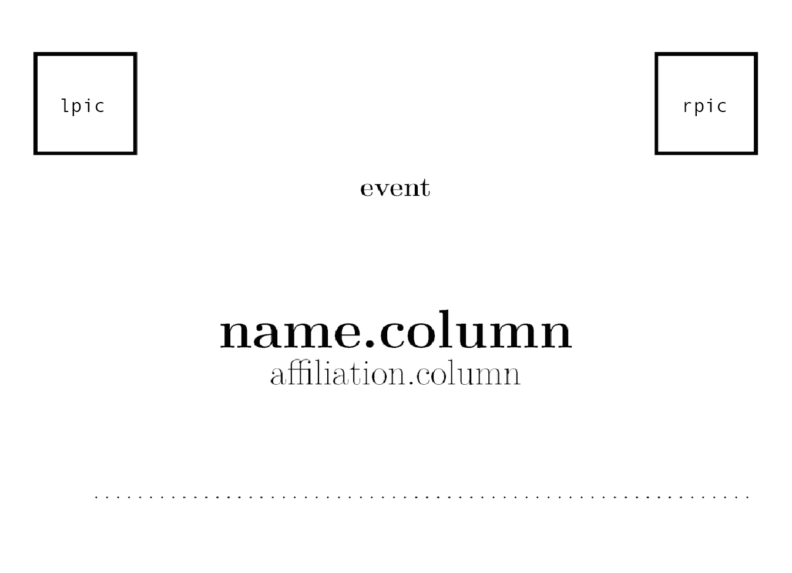
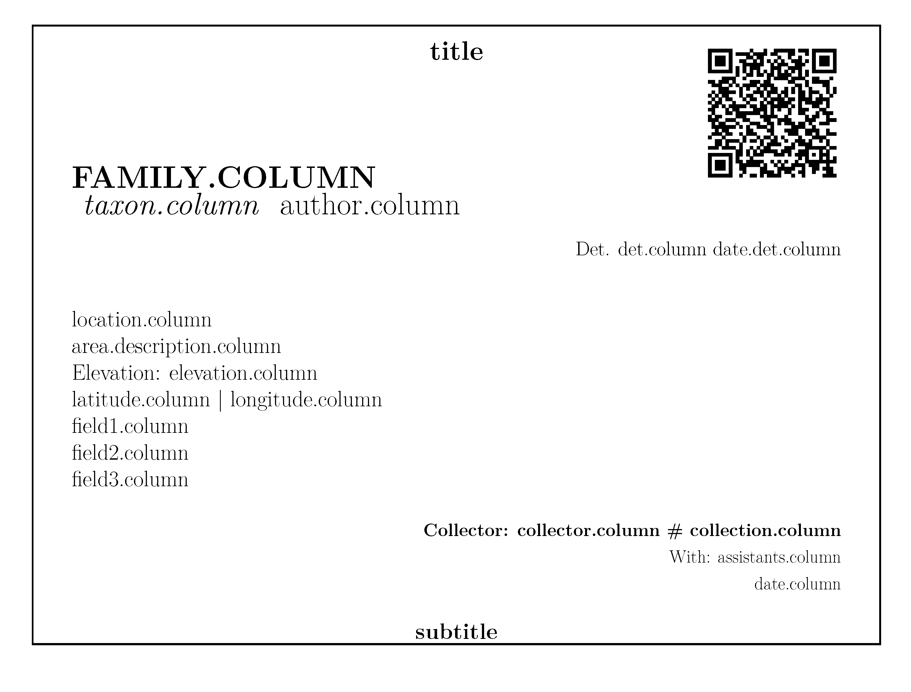
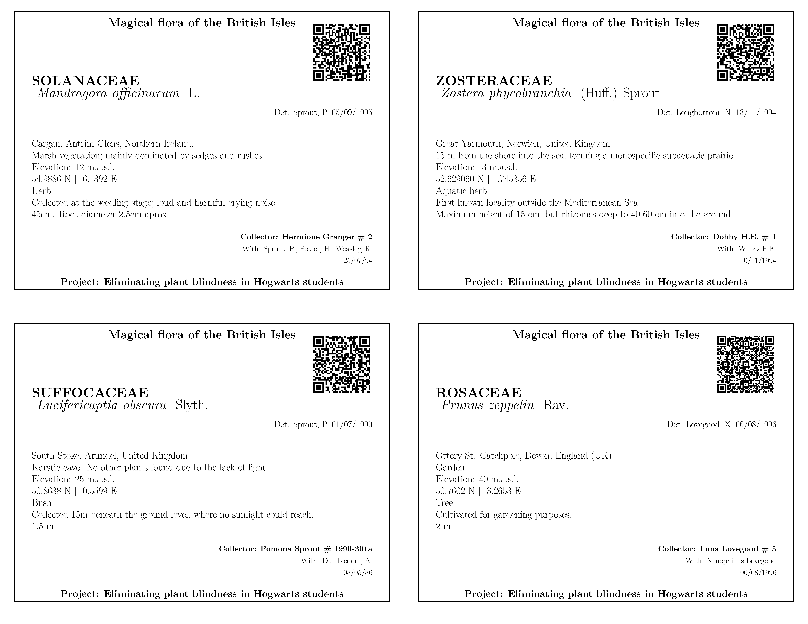
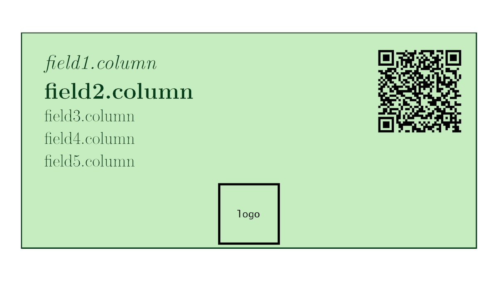
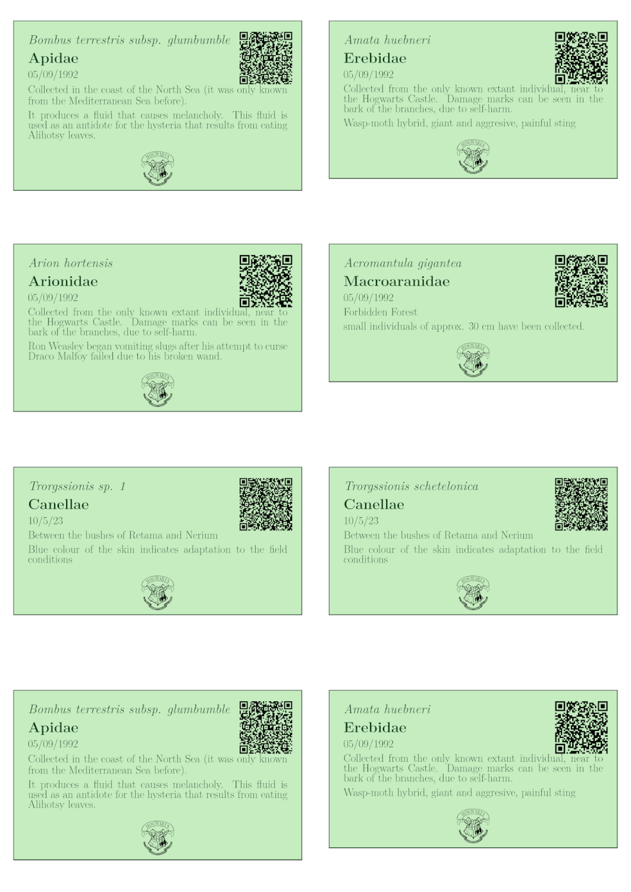
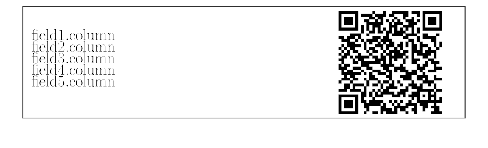
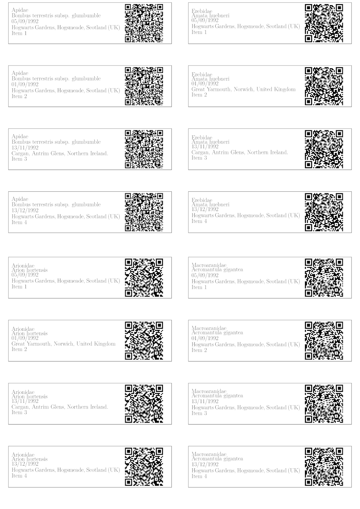

This is a package to create your own labels, certificates, and much more! :)
If you need to create your attendance or participation certificates, accreditation badges, herbarium or collection labels, labeleR is the package you need! Keep an eye on this easy tutorial on how to use it!
Installing labeleR
To install labeleR from GitHub, you might need to install the devtools package. Once you have it, you just have to specify the repository and install!
# install.packages("devtools")
devtools::install_github("EcologyR/labeleR")If you want to clone the repository, you can find the code here.
TinyTeX
labeleR depends on LaTeX, so you must have it also installed. We recommend using TinyTeX.
First, you would need to install the tinytex R package, and then run the installation:
# install.packages("tinytex")
tinytex::install_tinytex()The first time you install tinytex or use labeleR it may take a while until all packages are correctly installed. Don’t worry, it will be much quicker next time!
1. Getting started
1.1 Loading the data
The very first thing you need to start using labeleR is a data frame where the information is included. This data frame can be imported to the R environment reading it from a file (e.g. a ‘.csv’ file or ‘.xlsx’ excel sheet, using read.table(), readxl::read_excel(), and alike functions), but it can be also imported from Google Sheets.
To do so, you could use gsheet2tbl function from gsheet package, specifying the Google Sheet URL:
library(gsheet)
#URL: https://docs.google.com/spreadsheets/d/1inkk3_oNvvt8ajdK4wOkSgPoUyE8JzENrZgSTFJEFBw/edit#gid=0
people_list_long <- gsheet2tbl("1inkk3_oNvvt8ajdK4wOkSgPoUyE8JzENrZgSTFJEFBw")A key point to bear in mind is that the Google Sheet document must grant at least view access to anyone with the link; otherwise R will not be able to open it.
1.2 Some advice for the labeleR functions
When using labeleR’s functions, there are some widely used arguments and nomenclature that must be acknowledged.
The first required argument in all functions is data, which is the data frame that has been previously loaded. The second one is path, which is the folder where the output PDFs will be stored. In case the specified folder does not exist, it will be automatically created. In case you want to name the output PDF file in a certain way, you must specify it using the filename argument. Additionally, you can store the created intermediate files (e.g. RMarkdown, picture files) using keep.files = TRUE.
Ultimately, labeleR uses its own templates to create the documents. However, these can be modified for specific purposes. To do so, open a new RMarkdown file in RStudio, using the labeleR template you want to edit, and after saving it locally, specify its directory path in the template argument.
Pictures (such as logos or signatures) are included in some templates. For these, argument names are lpic (standing for left picture, in the top), rpic (right picture, also in the top) and signature.pic (signature picture) in the certificates; and logo in the collection label. In all these cases the path to the picture file must be provided.
As for the parameters nomenclature, there are two kinds. “Fixed parameters” are those that remain the same in all the certificates (e.g. the name of a conference in an accreditation, or the name of a speaker in an attendance certificate). These parameters are named using a unique word (e.g. event or speaker), and can be filled in using free text that will be printed in all documents. On the other hand, “variable parameters” are those which vary among documents, and therefore differ among rows (e.g. attendees names to a conference, or species in herbarium labels). To specify the column of data in which this information is stored, two-word parameters are used (i.e. name.column or species.column). The only parameter that does not follow this philosophy is qr in the functions that allow to plot them (i.e. create_herbarium_label, create_collection_label and create_tiny_label). This parameter can be set as a column name, which will result in variable parameter, or as a free text (not column name), which will be used as a fixed one.
2. labeleR functions
Now let’s start using labeleR!
To help you see the structure of our templates in a more visual way, we will display some examples inspired in the Harry Potter universe.
2.1 Attendance certificates
Attendance certificates are one of the easiest templates; the only variable parameter is the name of the attendees. Our template allows to include a signature as an image, so the signer does not have to go through them all. This certificate is available both in English and Spanish. In case pictures look too big or small, we recommend to modify their size, as they are set to have a given height.
The structure of the certificate looks as follows.
|  |
|---|
Attendance certificate example:
In this example, we create four different certificates for four students of Hogwarts School, in which the Headmaster certifies they have attended 200 h of the Potions class.
create_attendance_certificate(
data = attendance.table,
path = "labeleR_output",
filename = "attendance_certificates",
language = "English" ,
name.column = "Names",
type = "class",
title = "Potions (year 1992-1993)",
date = "23/06/1993",
hours = "200",
freetext = "taught by Professor S. Snape",
signer = "A.P.W.B. Dumbledore",
signer.role = "School Headmaster",
rpic=system.file("rmarkdown/pictures/Hogwarts_logo.png", package = "labeleR"),
lpic=system.file("rmarkdown/pictures/Hogwarts_logo.png", package = "labeleR"),
signature.pic=system.file("rmarkdown/pictures/dumbledore.png", package = "labeleR")
)In this example, each certificate will be rendered in an individual PDF document.
2.2 Participation certificates
Participation certificates are similar to the previous, but with more variable parameters (such as speaker, title and type of communication, etc.). As well as the attendance certificate, these documents can be rendered in English and in Spanish.
|  |
|---|
Participation certificate example:
Here, Albus Dumbledore certifies that four of the school teachers have participated in some seminars with different titles, different affiliations, dates and communication types.
create_participation_certificate(
data = participation.table,
path = "labeleR_output",
filename = "participation_certificates",
language = "English",
name.column = "Name",
affiliation.column = "House",
comm.type.column = "Comm.type",
title.column = "Title",
date.column = "Date",
type = "online",
event = "seminar",
freetext = "organized by Hogwarts School of Magic and Wizardry",
signer = "A.P.W.B. Dumbledore",
signer.role = "School Headmaster",
rpic=system.file("rmarkdown/pictures/Hogwarts_logo.png", package = "labeleR"),
lpic=system.file("rmarkdown/pictures/MinMagic.png", package = "labeleR"),
signature.pic=system.file("rmarkdown/pictures/dumbledore.png", package = "labeleR")
)In this example, each certificate will be rendered in an individual PDF document.
2.3 Badges
Badges (and all documents from now onward) are rendered in a single document, with eight accreditation cards per DIN-A4 page in this case. They have only two variable fields (name and affiliation), and can include two top images, although are not signed. Accreditation cards include a dot line in the bottom for individual hand-edition.
|  |
|---|
Badges example:
As an example, we present the accreditation cards that might have been used in the International Conference of Muggleology, where the only changing fields are names and affiliations of attendees.
create_badge(
data = badges.table,
path = "labeleR_output",
filename = "badges",
event = "INTERNATIONAL CONFERENCE OF MUGGLEOLOGY",
name.column = "List",
affiliation.column = "Affiliation",
rpic=system.file("rmarkdown/pictures/Hogwarts_logo.png", package = "labeleR"),
lpic=system.file("rmarkdown/pictures/minMagic.png", package = "labeleR")
)2.4 Herbarium labels
Herbarium labels are one of the documents with more variable parameters, as there is a lot of information to be included. Here, we have used a template we believe is the most useful, but we have included three free fields for the user to include the information they prefer. Of course, a field’s name does not force the user to use it for that category (location can be set in the elevation column, on top; and vice versa), but the family.column content will always be capitalized, and the taxon.column one in italics, so we recommend to use them as stated.
As said before, the QR can stand for a free text (and therefore remain identical in all labels), or be a column name, and therefore the codes will be rendered to specify the individual information in each row.
Including too long texts may cause the alteration of the structure of the labels, so we recommend to be concise.
|  |
|---|
Herbarium labels example:
In this example, we show the labels some students have created for their herbarium assignment of the Herbology class.
create_herbarium_label(
data = herbarium.table,
path = "labeleR_output",
filename = "herbarium_labels",
qr="QR_code",
title ="Magical flora of the British Isles" ,
subtitle = "Project: Eliminating plant blindness in Hogwarts students",
family.column = "Family",
taxon.column = "Taxon",
author.column = "Author",
det.column = "det",
date.det.column = "Det_date",
location.column = "Location",
area.description.column = "Area_description",
latitude.column = "Latitude",
longitude.column = "Longitude",
elevation.column = "Elevation",
field1.column = "life_form",
field2.column = "Observations",
field3.column = "Height",
collector.column = "Collector",
collection.column = "Collection_number",
assistants.column = "Assistants",
date.column = "Date"
)|  |
|---|
2.5 Collection labels
Collection labels are one of the most aesthetic labels. They have five variable parameters (which are not recommended to be too long, as explained in the herbarium labels), along with the possibility of including a QR code (fixed or variable), a logo image. Field 1 will be capitalized (as in family.column in the herbarium label, and Field 2 italicized). Any of the fields can be left blank.
As a novelty, the user may manually fix the backgroud and text colors to their preference, using HTML color codes (same code as HEX, but without the ‘#’). By default, background colors are two hues of green.
|  |
|---|
Collection labels example:
In this example we can see six labels created for the school’s displayed collection of stuffed animals.
create_collection_label(
data = label.table,
path = "labeleR_output",
filename = "labels",
qr="QR_code",
field1.column = "field1",
field2.column = "field2",
field3.column = "field3",
field4.column = "field6",
field5.column = "field7",
system.file("rmarkdown/pictures/Hogwarts_BnW.png", package = "labeleR"),
bgcolor = "D0ECC1", #White is "FFFFFF",
textcolor = "1E3F20" #Black is "000000"
)|  |
|---|
2.6 Collection tinylabels
This type of labels is a simplified version of the previous, and includes just five variable fields and the possibility of including a QR code.
We recommend as in the previous cases not to include too long texts neither in the variable parameters nor in the QR, as they can become difficult to read.
Tinylabels are printed in arrays of 8x2 labels per page. In case this size is too big for the pretended use (as can happen for small insect collections, for example), we recommend to use the “print several pages per sheet” in the printer’s options.
|  |
|---|
Tinylabels example:
Here, tinylabels are created for typical collections stored in boxes, so a normal collection label would be to big.
create_tiny_label(
data = tiny.table,
qr="QR_code",
path = "labeleR_output",
filename = "tinylabels",
field1.column ="field2",
field2.column ="field1",
field3.column ="field3",
field4.column ="field4",
field5.column ="field5"
)|  |
|---|
Citation
To cite package 'labeleR' in publications use:
Ramos-Gutierrez I, de Aledo JG, Rodríguez-Sánchez F (2023). _labeleR:
Automate the Production of Custom Labels, Badges, Certificates, and
Other Documents_. <https://EcologyR.github.io/labeleR/>.
A BibTeX entry for LaTeX users is
@Manual{,
title = {labeleR: Automate the Production of Custom Labels, Badges, Certificates, and Other Documents},
author = {Ignacio Ramos-Gutierrez and Julia G. {de Aledo} and Francisco Rodríguez-Sánchez},
year = {2023},
url = {https://EcologyR.github.io/labeleR/},
}Funding
The development of this software has been funded by the European Union - Next Generation EU, Fondo Europeo de Desarrollo Regional (FEDER) and Consejería de Transformación Económica, Industria, Conocimiento y Universidades of Junta de Andalucía (proyecto US-1381388 led by Francisco Rodríguez Sánchez, Universidad de Sevilla).